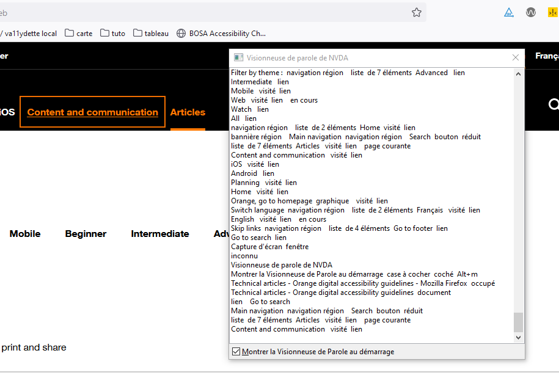
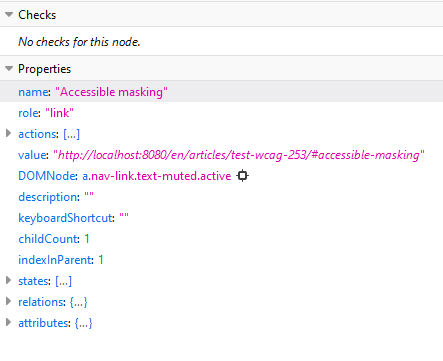
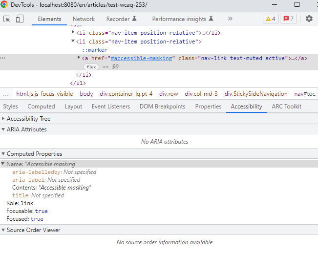

How to test the WCAG 2.5.3 ?
Associated themes:- Web
- Intermediate
Publication date
What does WCAG 2.5.3 mean #
General explanation #
The purpose of this criterion is to ensure that if a button, link, or other interface element contains some screen visible text, its accessible name must contain at least the same text as the one displayed.
This is to ensure that users of technical aids can understand and interact with the component. Indeed, the technical aids are based on the accessible name of the components. For example, a voice recognition user will be able to click on a button simply by pronouncing its accessible name.
The visible text and the accessible name do not have to be identical, but the visible text must be present in the accessible name, preferably first.
Concrete example #
Accessible name #
Let’s take the example of a user using voice recognition software who wants to input and submit a form.
<button>
<img src="send.png" alt="Submit">
</button>
The above example may be problematic. The button contains an image with the text "Send" but the alternative text of the image is "Submit", so its accessible name is "Submit". Since technologies depend on the accessible name, if the user says "Send", nothing will happen.
To solve the problem, the alternative text must be the same as the image text ("Send").
Accessible masking #
Be careful when using accessible masking. It should not be placed in the middle of a visually displayed label.
Otherwise, it will be impossible to correlate the accessible name with the displayed text.
Example of Error:
<a href="www.orange.com" target="_blank"> Open <span class="visually-hidden">in new Window </span> Orange ebsite </a>
If you say, "Open orange website", the voice recognition software won’t find the element. On the other hand, if we say "Open in a new window orange website" the link will be activated, as it is its accessible name.
How to test it #
Screen reader #
The screen reader vocalizes the properties of the element on which you place your focus.
Particularly, the following characteristics of the element: its function (link, button, text...), its status and its accessible name. If the accessible name you hear does not match what is textually visible, then the criterion is considered non-compliant.
You can use the Lyric Viewer on the screen reader to text-write the characteristics of an item. It is therefore possible to compare the accessible name in textual form read by the screen reader with the text displayed on the component.

Order inspector #
The best way to check the criterion with the control inspector depends on the browser used.
With Firefox #
- Access Control Inspector (Ctrl+ Shift. + i)
- Select the accessibility tab
- Inspect an item
- Look at the properties part, if the name attribute contains at least the displayed text, the criterion is compliant

With Chrome or Edge Chronium #
- Access Control Inspector (Ctrl+ Shift. + i)
- Select the Elements tab
- Choose the element you want to inspect
- Click on the Accessibility tab, this tab can be hidden behind the "more tab" button
- Look at the part "Computed Properties" if the attribute name contains at least the displayed text, the criterion is compliant
